Agentic On-Policy Distillation · 2026.1001 / 10
为什么需要 Agentic OPD？
从整段 token matching，走向错误传播下的 step-wise reliability
SOD
Step reliability
Step-wise On-policy Distillation for Small Language Model Agents
多轮工具交互中，一个错误 action 会注入大段异常 observation。后续状态逐步离开 Teacher support，统一累加 OPD loss 会把高方差监督当成同等可靠。
- 按模型生成步骤聚合 Student–Teacher log-prob gap，而不是把整条 trajectory 视作同质 token 流。
- 前一步分歧变大时降低当前 step 权重；策略恢复时允许权重回升，并限制最大放大幅度。
- 核心贡献是 reliability weighting；它仍以 disagreement 作为 proxy，不等价于真实因果责任。
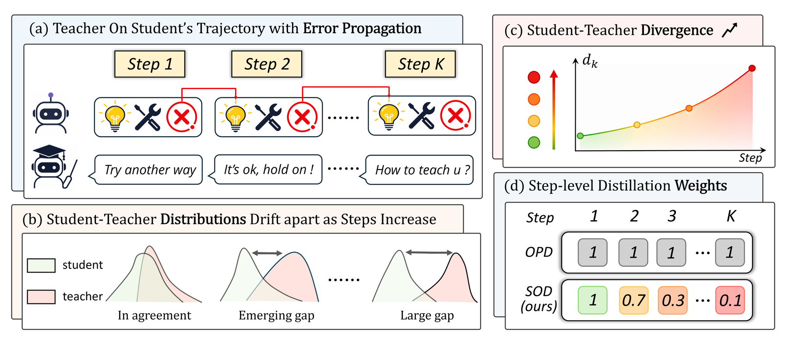
\[d_k=\frac{1}{|\mathcal I_k|}\sum_{t\in\mathcal I_k}\left|\log\pi_\theta(y_t\mid y_{<t})-\log\pi_{\mathrm{teacher}}(y_t\mid y_{<t})\right|\]
\[w_k=\min\!\left(w_1\prod_{u=1}^{k-1}\frac{d_u+\epsilon}{d_{u+1}+\epsilon},\,1+\delta\right)\]
Primary source:
2605.07725v3 · official paper figure and equations
Agentic OPD 的第一条主线：先判断当前 step 的 Teacher signal 是否还可信。
Agentic On-Policy Distillation · 2026.1002 / 10
把 Hindsight 变成 Step-level Credit
StepOPSD：不改变在线 rollout，只在事后重塑 advantage
StepOPSD
Hindsight shaping
Step-Aware Online Preference Self-Distillation for Agent Reinforcement Learning
Student 仍按原策略与环境交互；rollout 完成后，将轨迹切成 causal action spans，并在加入 hindsight 的 Teacher context 下重评分同一 token。
- Teacher–Student likelihood gap 提供 dense token preference，但不替换环境给出的 outcome advantage。
- 用 advantage 符号决定 gap 的方向，再经过 sigmoid 与 clip 得到有界 credit weight。
- 最终只调节 GRPO advantage 的幅度，保留原始 outcome 的正负方向。
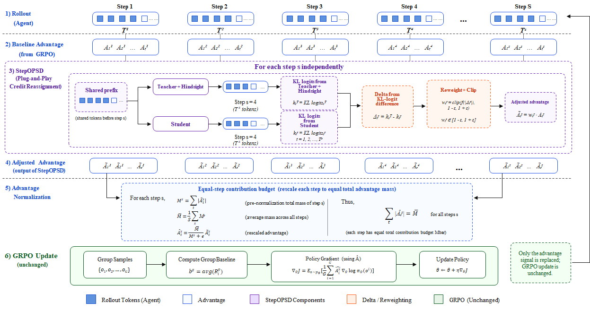
\[\Delta_{k,j}=\log\pi_T(z_{k,j}\mid c_k^T,z_{k,<j})-\log\pi_S(z_{k,j}\mid c_k^S,z_{k,<j})\]
\[\widetilde A_\ell=(1-\lambda_{\mathrm{mix}})A_\ell+\lambda_{\mathrm{mix}}(w_\ell A_\ell)\]
Primary source:
2605.27140v2 · official paper figure and equations
变化：Teacher 不再只提供 imitation target，而开始参与 outcome credit 的局部再分配。
Agentic On-Policy Distillation · 2026.1003 / 10
让 OPD 感知 Turn 与 Horizon
TurnOPD：训练多深、每个 turn 占多大权重，都由在线统计控制
TurnOPD
Turn-aware horizon
Making On-Policy Distillation Turn-Aware for Efficient Long-Horizon Agent Training
Vanilla OPD 在长 horizon 中出现外部错配与内部错配：Teacher uncertainty 和 reverse-KL 随 turn 加深，深层 token 又可能在 trajectory normalization 下占据过多 loss。
- 用每 turn KL 与 survivor ratio 估计有效 rollout 深度。
- 再用成功轨迹长度分位数给出 coverage lower bound，避免 horizon 过短。
- 从 trajectory-normalized loss 渐进切换到 turn-normalized loss，减少长 turn 对梯度的垄断。
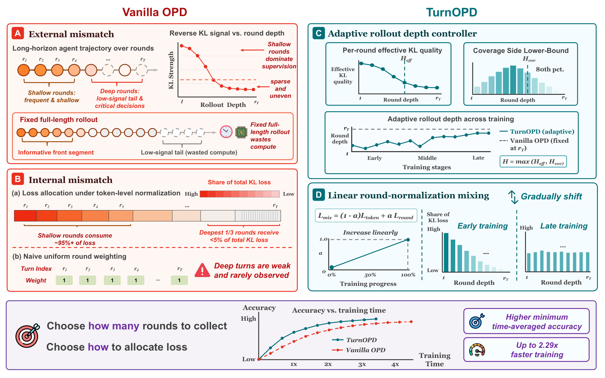
\[H_{\mathrm{ctrl}}=\max(H_{\mathrm{eff}},H_{\mathrm{cov}})\]
\[q_t^{\mathrm{blend}}=(1-\alpha)\frac{n_t}{\sum_jn_j}+\alpha\frac1T\]
Primary source:
2607.05804v2 · official paper figure and equations
Agentic OPD 的第二条主线：监督不仅要可信，还要控制暴露到多深的状态分布。
Agentic On-Policy Distillation · 2026.1004 / 10
控制 Student 访问的状态分布
从 DAgger 的 Teacher mixing，到 Guided-OPD 的 curriculum turn guidance
Revisiting DAgger
Mixed-policy rollout
Revisiting DAgger in the Era of LLM-Agents
仅在 Teacher demonstrations 上 SFT 会遭遇 covariate shift；纯 Student rollout 又会在冷启动时迅速进入无效状态。DAgger 在每个 turn 随机选择 Teacher 或 Student，并收集 Teacher labels。
- 逐 turn mixture 扩大可恢复状态覆盖。
- 训练目标仍是 Teacher action 的交叉熵。
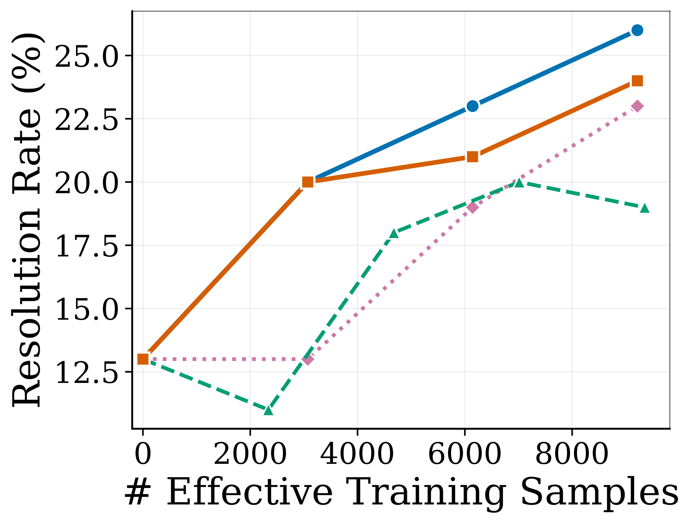
\[\mu_i=\beta_i\pi_e+(1-\beta_i)\pi_{\theta_i}\]
Primary source:
2605.12913v1 · official paper figure and equations
Guided-OPD
Curriculum mixing
On-Policy Distillation with Curriculum Turn-level Guidance for Multi-turn Agents
Guided-OPD 将 DAgger 式混合嵌入 OPD：训练早期 Teacher turns 较多，随后按 curriculum 衰减到纯 Student on-policy rollout。
- Teacher turn 使用 forward-KL；Student turn 使用 reverse-KL。
- 最终阶段 β=0，与标准 OPD 一致。
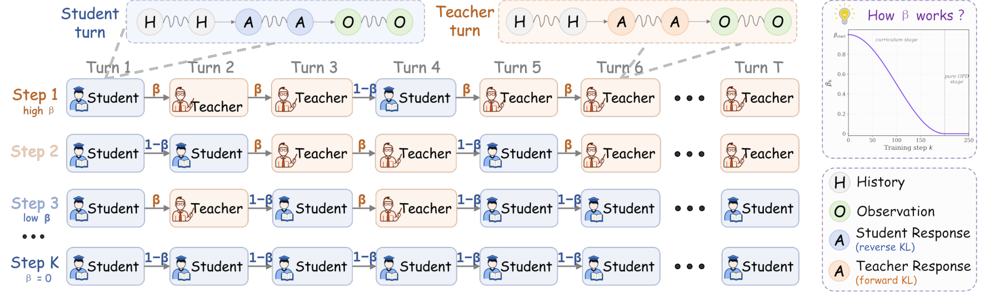
\[\mathcal L_t=(1-\beta_t)\mathcal J_{\mathrm{rKL}}^{\pi_\theta}+\beta_t\mathcal J_{\mathrm{fKL}}^{\pi_\phi}\]
Primary source:
2606.15912v3 · official paper figure and equations
关键取舍：Teacher intervention 改善状态覆盖，但 intervention 后的 history 不再是纯 Student on-policy。
Agentic On-Policy Distillation · 2026.1005 / 10
选择性干预与 Offline Prefix Replay
不必在每个 turn 都调用 Teacher，也不必让环境在训练全程保持在线
SAGE-OPD
Selective intervention
Selective Agent-Guided Intervention for Multi-Turn On-Policy Distillation
Intervention Agent 依据 Student response、Teacher disagreement 与 confidence，在 Skip / Weak / Strong 三档之间选择。
- 用 Teacher confidence 抑制不可靠干预。
- 按实际被监督 token 数归一化，保持 loss scale 稳定。
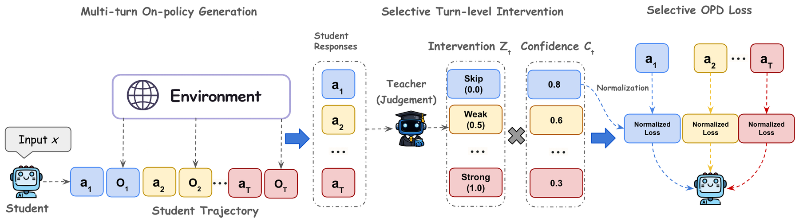
\[s_t=i_t c_t,\qquad \mathcal L_{\mathrm{SAGE}}=Z\sum_t s_t\mathcal L_{\mathrm{OPD}}(h_t,a_t)\]
Primary source:
2606.19659v1 · official paper figure and equations
ReOPD
Offline replay
Multi-Turn On-Policy Distillation with Prefix Replay
Teacher trajectories 只需离线收集一次；Student training 通过 prefix replay 构造状态，环境无需始终在线，并让较早 step 获得更高权重。
- 用 Student / Teacher occupancy 的 geometric bridge 控制 replay distribution。
- 用指数衰减近似长期 distribution-shift cost。
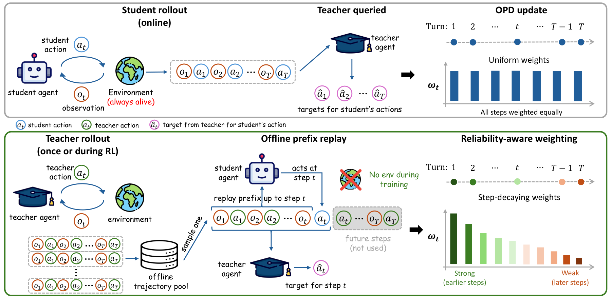
\[\rho_t^*(h_t\mid x)\propto[d_t^{\theta_{\mathrm{old}}}]^{\gamma_t}[d_t^T]^{1-\gamma_t},\qquad \omega(t,\kappa)=\kappa^t\]
Primary source:
2607.04763v3 · official paper figure and equations
这一阶段开始同时优化监督质量、Teacher query 成本与 environment availability。
Agentic On-Policy Distillation · 2026.1006 / 10
动态 Teacher 信息：从固定答案到 Skill
Skill-SD：Teacher privilege 来自 trajectory analysis，而不是唯一标准路径
Skill-SD
Dynamic privileged context
Skill-Conditioned Self-Distillation for Multi-turn LLM Agents
Agent task 往往存在多条有效 action path。Skill-SD 将完成轨迹异步总结为 success analysis、mistake analysis 与 golden workflow，并存入 UCB-indexed skill buffer。
- Student 使用原始 prompt；Teacher 在同一 token prefix 上额外读取检索到的 skills。
- GRPO 提供 task-level credit；importance-weighted SDL 迁移 token-level Teacher distribution。
- 动态 Skill 解决 Teacher 应该知道什么，但不直接解决后续 outcome 对早期 action 的因果归因。
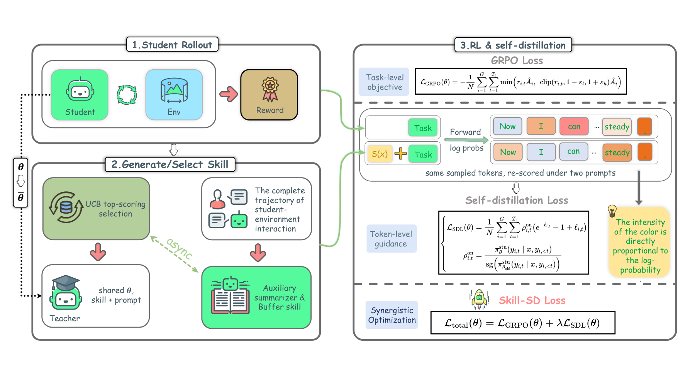
\[e=\operatorname{Analyze}(\tau,x)=(e_{\mathrm{success}},e_{\mathrm{mistake}},e_{\mathrm{workflow}})\]
\[\mathcal L_{\mathrm{total}}=\mathcal L_{\mathrm{GRPO}}+\lambda\mathcal L_{\mathrm{SDL}}\]
Primary source:
2604.10674v1 · official paper figure and equations
Agentic OPD 的第三条主线：privileged information 从静态 oracle 走向随经验演化的可检索技能。
Agentic On-Policy Distillation · 2026.1007 / 10
信息不对称：Privileged Teacher 也可能误导
AR-OPD 校准 support mismatch；HINT 把 hindsight 压缩到真正的 decision fork
AR-OPD
Anchored residual
Beyond Absolute Imitation: Anchored Residual Guidance for Privileged On-Policy Distillation
Full privileged context 可能让 Teacher 依赖 Student 永远看不到的答案状态。AR-OPD 先构造 partial anchor，再只迁移 full view 相对 anchor 的 residual。
- Anchor 保留可由 Student 重建的支持。
- λ 控制 privileged residual 强度，避免绝对模仿。
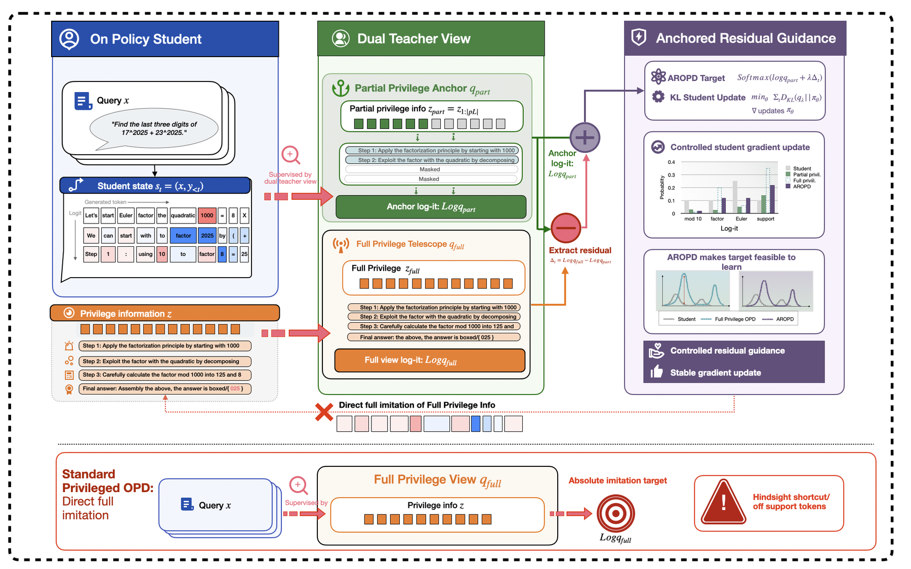
\[\log q_\lambda=\log q_{\mathrm{part}}+\lambda(\log q_{\mathrm{full}}-\log q_{\mathrm{part}})-C_t\]
Primary source:
2606.10385v1 · official paper figure and equations
HINT
Compressed hindsight
Multi-Turn Agent Self-Distillation with Compressed Hindsight
Reflector 将完整 trajectory outcome 压缩为 turn-level diagnosis 与可选纠正动作，只在识别出的错误 turns 蒸馏。原始长图写作 HERO，但对应论文和方法实际为 HINT。
- Teacher context 注入 diagnosis，而不是泄露完整参考答案。
- JSD loss 聚焦错误 turn 的 action tokens。
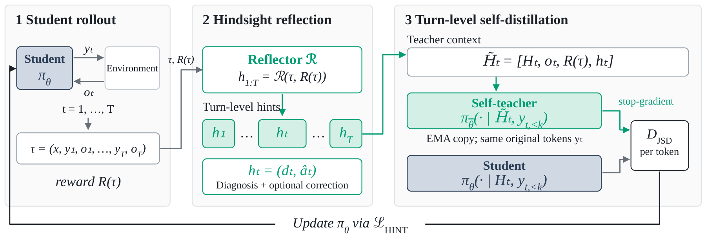
\[h_t=(d_t,\hat a^t),\qquad \mathcal L_{\mathrm{HINT}}=\frac1{|I(\tau)|}\sum_{t\in I(\tau)}\ell_t\]
Primary source:
2606.11559v2 · official paper figure and equations
新问题：Teacher 拥有更多信息不代表它在 Student state 上一定校准良好。
Agentic On-Policy Distillation · 2026.1008 / 10
Bayesian Credit：从证据增量到 Turn Advantage
OPPO 给出 token-level value recursion；PBSD 将 privileged evidence 引入长程 Agent
OPPO
Token Bayesian evidence
Bayesian Value Recursion for Token-Level Credit Assignment in LLM Reasoning
把每个 token 的 likelihood ratio 视为 Bayesian evidence，递归更新成功概率；相邻 value 的变化就是局部 advantage。
- Token advantages telescoping 到最终 reward 与初始 value 的差。
- 一阶近似把 credit 分解为 uncertainty × evidence。
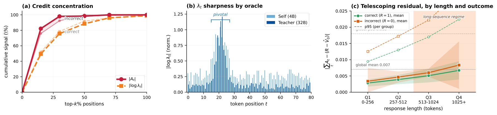
\[V_{t+1}=\frac{\lambda_t^*V_t}{\lambda_t^*V_t+(1-V_t)},\qquad A_t=V_{t+1}-V_t\]
\[\sum_{t=1}^T A_t=R-V_0\]
Primary source:
2605.21851v2 · official paper figure and equations
PBSD
Turn Bayesian evidence
Privileged Bayesian Self-Distillation for Long-Horizon Credit Assignment
比较有/无 privileged outcome information 时当前 action 的 likelihood，得到 turn-level evidence score，再通过 decision gate 调整 sequence advantage。
- Bayes identity 将 outcome posterior 转换为 trajectory evidence ratio。
- 保留 sequence reward 的方向，同时在 turn 内重新分配幅度。
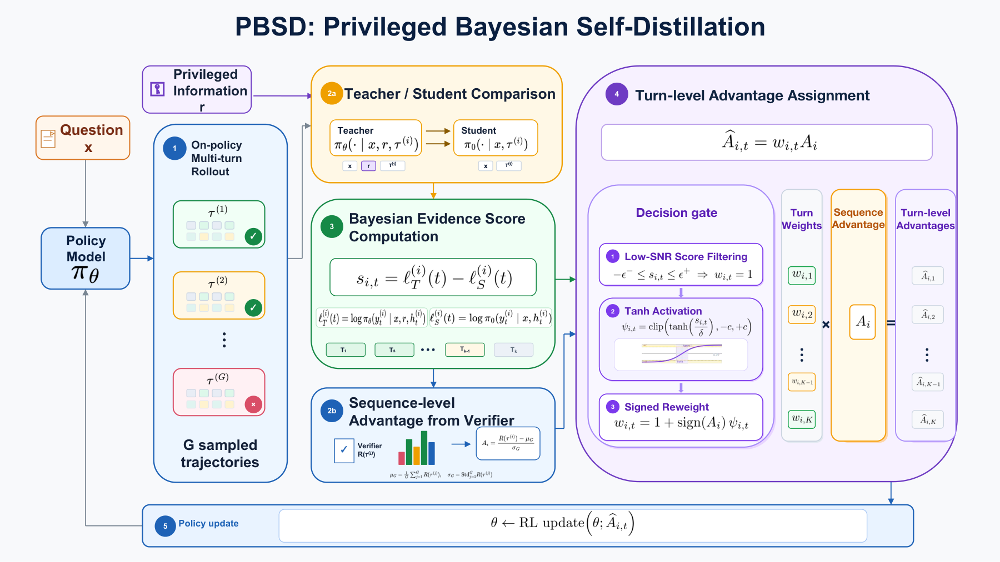
\[s_{i,t}=\log p(a_{i,t}\mid x_i,\tau_{i,<t},y^*)-\log p(a_{i,t}\mid x_i,\tau_{i,<t})\]
\[\widetilde A_{i,t}=w_{i,t}A_i\]
Primary source:
2606.09348v2 · official paper figure and equations
Bayesian 视角把 Teacher gap 从“模仿误差”改写成“当前动作对成功结论提供了多少证据”。
Agentic On-Policy Distillation · 2026.1009 / 10
递归与层级 Credit Assignment
AgentOPSD 用 belief revision 分 turn；CrEST 让 verifier 决定方向、Teacher 只教幅度
AgentOPSD
Recursive belief
Recursive Self-Distillation for Agentic Reinforcement Learning
先将 token-level privileged gap 聚合为 turn evidence，再递归更新成功 belief。相邻 belief revision 作为每个 turn 的局部 credit。
- 初始 belief 来自 group success rate。
- 最终 turn advantage 与 sequence outcome 符号对齐。
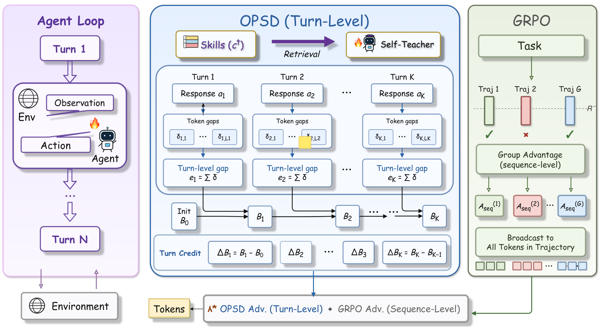
\[e_k=\log\frac{\pi_\theta(a_k\mid s_k,c^+)}{\pi_\theta(a_k\mid s_k)},\qquad \Delta B_k=B_k-B_{k-1}\]
Primary source:
2608.05987v1 · official paper figure and equations
CrEST
Verifier-anchored hierarchy
Teach the Magnitude, Not the Direction
Teacher disagreement 不应决定更新方向。CrEST 让 environment verifier 提供 turn-level sign，self-teacher 只调节 token-level magnitude。
- Inter-turn credit 来自 verifier。
- Intra-turn magnitude 由 entropy-gated Teacher gap 提供。
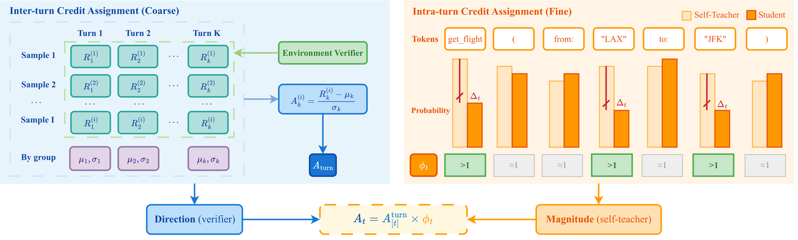
\[\mathcal A_t=A_{[t]}^{\mathrm{turn}}\phi_t,\qquad \phi_t=1+\lambda_t^{\mathrm{eff}}(w_t-1)\]
Primary source:
2608.13179v2 · official paper figure and equations
方向与幅度解耦，是减少 privileged Teacher 误导风险的一条清晰设计原则。
Agentic On-Policy Distillation · 2026.1010 / 10
TASPO：Outcome-Constrained Process Supervision
用 verified successful siblings 构造 trajectory-aligned PI，同时守住 outcome advantage
TASPO
Outcome-constrained redistribution
Reconciling Process Supervision with Outcome-Based Credit in Agentic Policy Optimization
TASPO 从同任务的 verified successful siblings 提取与当前 trajectory 对齐的 privileged information，在 action level 计算 likelihood shift，并把它转换为有界、均值为 1 的 advantage weights。
- 权重始终为正，不翻转 outcome advantage 的符号。
- 每条 trajectory 上权重均值为 1，不改变总体 advantage budget。
- 局部 process supervision 只重新分配 credit，不覆盖 verifier 给出的成败结论。
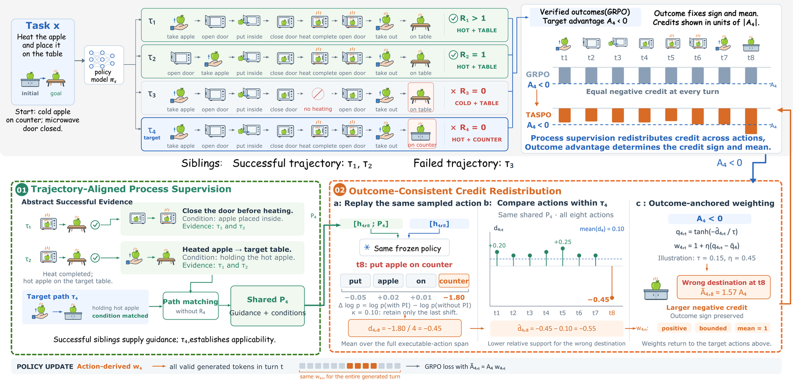
\[\widetilde A_t^i=A_iw_t^i,\qquad 1-\epsilon_w\le w_t^i\le1+\epsilon_w,\qquad \frac1{T_i}\sum_t w_t^i=1\]
\[w_t^i=1+\eta(q_t^i-\bar q_i)\]
Primary source:
2608.31077v2 · official paper figure and equations
发展脉络：局部 KL → step reliability → state coverage → dynamic PI → Bayesian/recursive credit → outcome-constrained redistribution。